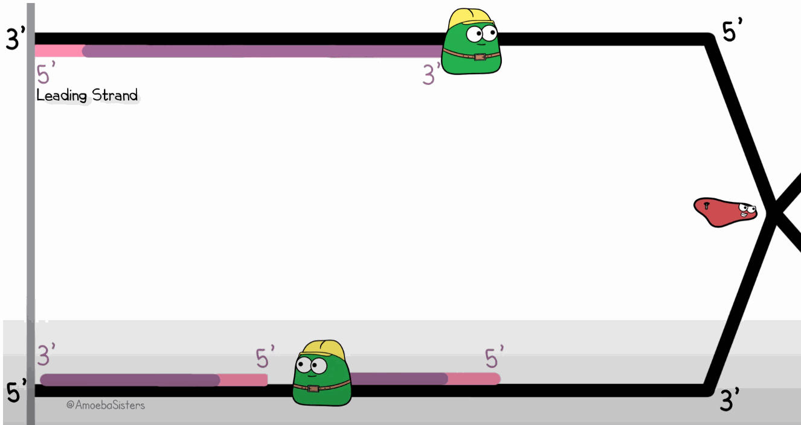

$ is the wrong way around (sometimes)
Abstract
I explain why plain function application can sometimes be considered the wrong way around and what can be done to solve it using examples in Elm as well as Haskell.Content
When learning about functional programming it is common to explain function application as repeated function calling in most imperative languages. For example:
binaryFunction(x)(y)
--becomes
binaryFunction x y
getMatchedTopLevel : (TopBindingInfo -> Int) -> CodeTab -> List (List TopBindingInfo)
- Call getMatchedTopLevel using the topBindingHash field selector
- Filter out sublists that are not of size #panels (this is a diff case so we don't want to hide them)
- Concatenate the list of lists
- Map the TopBindingInfo to its id
- Convert to a Set
hideSet : Set Int
hideSet = Set.fromList (List.map topBindingInfoToInt (List.concat (List.filter (\xs -> List.length xs >= nrPanels) (getMatchedTopLevel .topBindingHash tab))))
Now if you don't agree this is awful to look at than I'm afraid we probably won't get along very well along as coding partners...
One option to improve the snippet is with the help of the equivalent of Haskell's $ operator in Elm:
hideSet : Set Int
hideSet = Set.fromList <| List.map topBindingInfoToInt <| List.concat <| List.filter (\xs -> List.length xs >= nrCaptures) <| getMatchedTopLevel .topBindingHash tab
At least we are no longer counting parenthesis but it still does not feel entirely right. Why is that? Well, my theory is that to understand the whole expression whilst reading - as humans naturally do - from left to right, one has to keep a list in their head about which operations will be applied in reverse. It would make much more sense to read the other way around. But this introduces a similar problem that our bodies face copying DNA.
To quickly get you up to speed with my analogy; Remember how DNA is a double helix consisting of two strands? Well when a copy needs to be made (usually because the cell is about to split), this structure has to be unwound. This process is completed by the enzyme helicase. After helicase has unwound a section of two complementing strands of DNA, polymerase will work on both these single strands to make them whole again, yielding two complete DNA strands which are both half 'new'. However, polymerase can only traverse the strand in one direction, but since strands are always mirrored versions of each other, one of the stands (known as the lagging strand) has to be traversed in the opposite of the unwinding process. Therefore, on this side polymerase which have to jump back over its previous work to find a new small section to work on and so on. Check out this visualisation by the youtube channel Amoeba Sisters

As you can see, the lower copy is not made in one continuous operation, but in so called Okazaki fragments. This is exactly how one would have to read our previous Elm fragment: reading backwards to follow the order of operations, but jumping ahead and reading forward to decipher the normal English names given to functions and variables.
Now I was assuming that the lagging strand was more error prone and let to more DNA mutations so that I could make the biologically supported claim that writing deeply nested applications is cancerous. However it actually turns out that the opposite is the case when it comes to DNA. But I hope that my point still stands.
Now I very well understand why function application was designed this way, because it simply would not make sense the other way around in small cases, especially when specializing functions via partial application:
-- This seems like an awful idea
minusFive : Int -> Int
minusFive = minus 5
hideSet : Set Int
hideSet =
getMatchedTopLevel .topBindingHash tab
|> List.filter (\xs -> List.length xs >= nrPanels)
|> List.concat
|> List.map topBindingInfoToInt
|> Set.fromList
(|>) :: a -> (a -> b) -> b
(|>) x f = f x
infixl 1 |>